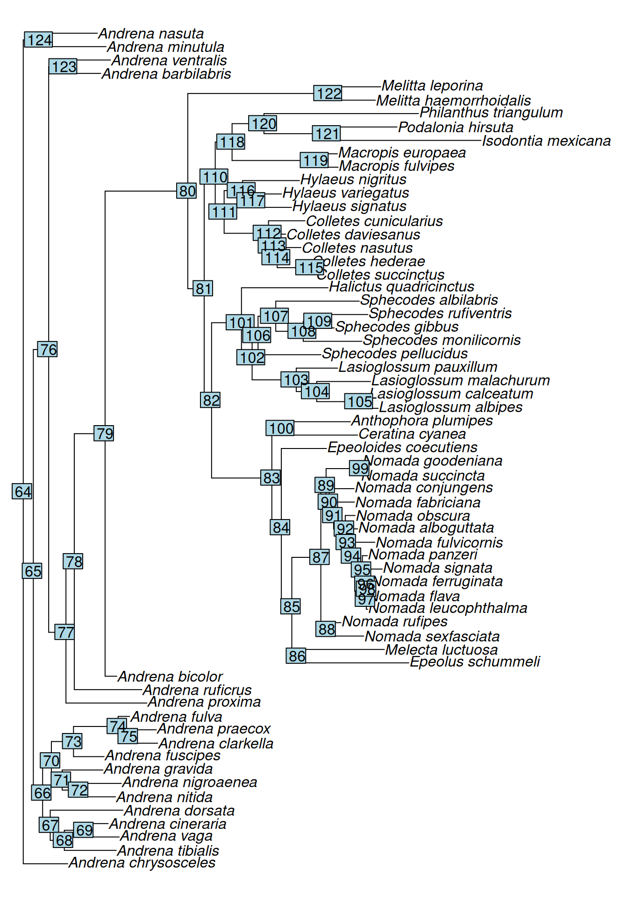
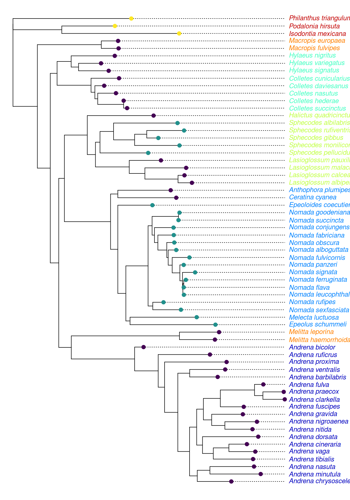
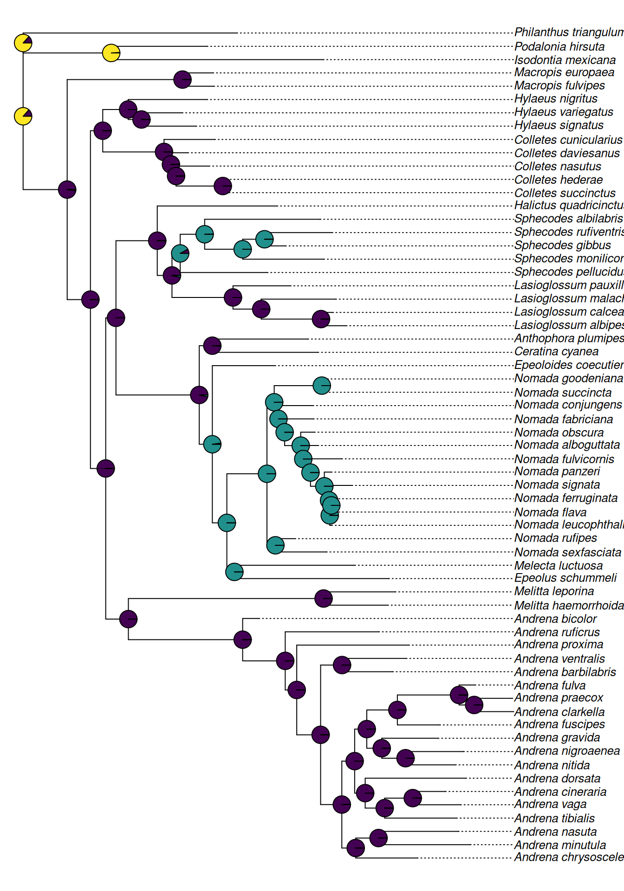
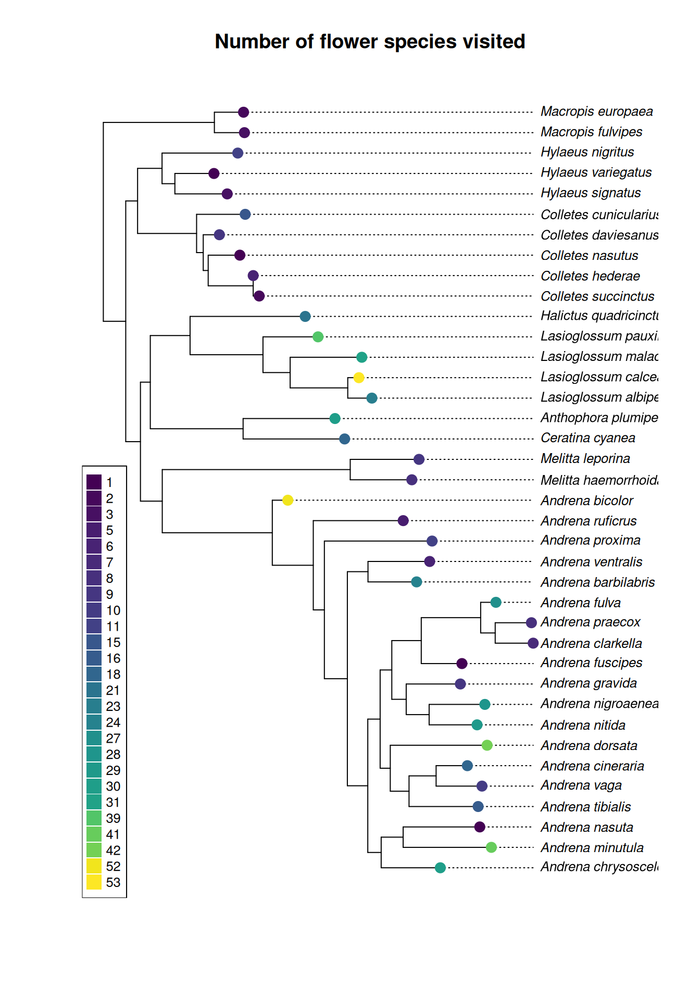
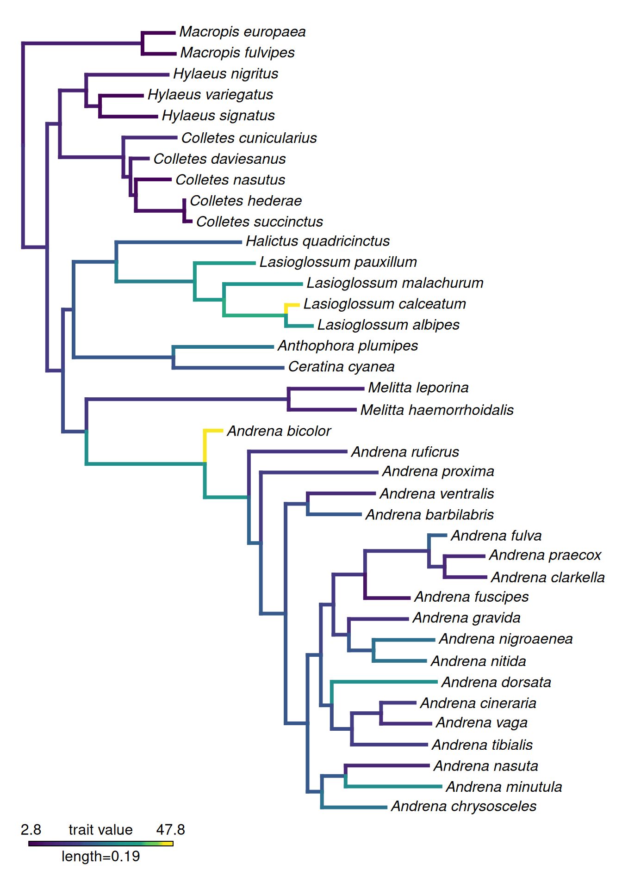

In many cases we are not only interested in the phylogeny of a taxon itself, but also and/or mostly in the evolution of traits associated with a taxon. Did a certain trait or lifestyle within a group of organisms evolve once or multiple times independently? Is the evolutionary diversifiction of a clade associated with a particular trait? What was the state of a trait in the last common ancestor of a taxon of interest? All these questions can be answered with phylogenetic methods, and we will look at some very basic examples in the course.
18.1 Preparing the data
Make sure you have a bee tree from one of the previous chapters ready. We will also read in data on preferred plant sources for the German bee taxa and data on taxonomy and life style of the bees.
library(ape)library(tidyverse)
── Attaching core tidyverse packages ──────────────────────── tidyverse 2.0.0 ──
✔ dplyr 1.1.4 ✔ readr 2.1.6
✔ forcats 1.0.1 ✔ stringr 1.6.0
✔ ggplot2 4.0.1 ✔ tibble 3.3.1
✔ lubridate 1.9.4 ✔ tidyr 1.3.2
✔ purrr 1.2.1
── Conflicts ────────────────────────────────────────── tidyverse_conflicts() ──
✖ dplyr::filter() masks stats::filter()
✖ dplyr::lag() masks stats::lag()
✖ dplyr::where() masks ape::where()
ℹ Use the conflicted package (<http://conflicted.r-lib.org/>) to force all conflicts to become errors
The first table lists all flowers that were recorded as being visited by any bee species in Germany. The table is taken from the book (Die Wildbienen Deutschlands by Paul Westrich (2019, Ulmer))[https://elibrary.utb.de/doi/book/10.1399/9783818608811]. We digitalised the list through some semi-automatic steps, so it may not be free of errors.
pollen
Each line of the file corresponds to one combination of bee and flower species. For each bee species, the pollen preference is given (oligo= specialist, poly= generalist, oligo_str= strict specialist), and the genus and family names have been added to the plant names. We will now use our tidyverse tools to modify the table a little.
`summarise()` has grouped output by 'species'. You can override using the
`.groups` argument.
What have we done here? First, we created a new column (“species_tree”), using the bee species names in the original column, but replacing the white space with an underscore. This is necessary because the names in our tree use underscores. Next, we filtered the dataframe to only keep the lines for our species of interest which we find in the tree. We used %in% for this, a very convenient shortcut. Finally, we summarised the information in the file by counting how many different plant species each of the bee species in our dataset have visited. We also do this for number of plant genera and families.
The other file contains information on the taxonomy of the bees in our dataset (which bee family) and about whether or not they are parasitic taxa.
taxlife
Using some more tidyverse magic, we’ll combine the two datasets
# this is the same as above!bee_metadata <- pollen %>%mutate(species =str_replace(species, " ", "_")) %>%filter(species %in% coi.tree$tip.label) %>%group_by(species, preference) %>%summarise(num_species =n_distinct(plant_species),num_genus =n_distinct(plant_genus),num_familiy =n_distinct(plant_family)) %>%# that bit is new and merges the 2 dataframesfull_join(taxlife)
`summarise()` has grouped output by 'species'. You can override using the
`.groups` argument.
Joining with `by = join_by(species)`
bee_metadata
18.2 Mapping a discrete trait on the phylogeny
We are now ready to map a discrete trait onto our phylogeny and investigate if it shows phylogenetic signal.
library(colourvalues)# plot the tree to find out which node to place the root onplot(coi.tree, no.margin =TRUE)nodelabels()

# generate the rooted treecoi.rooted <-root(coi.tree, node =120, resolve.root =TRUE)# the metadata file must be in the same order as the tip labelsbee_metadata <-arrange(bee_metadata, factor(species, levels = coi.rooted$tip.label))# plot highlighting the different bee families in our datasetplot(coi.rooted, align.tip.label = T,cex =0.8,label.offset =0.01,tip.color =colour_values(bee_metadata$family, palette ="matlab_like2"))tiplabels(col=colour_values(bee_metadata$parasitic), pch =20, cex =1.5)

This definitely looks like a trait with a clear phylogenetic signal. Let’s test this using the picante package!
library(picante)
Loading required package: vegan
Loading required package: permute
Loading required package: nlme
Attaching package: 'nlme'
The following object is masked from 'package:dplyr':
collapse
# this will only work if your metadata is sorted as shown in the previous code block!phylosignal(as.vector(bee_metadata$parasitic), coi.rooted)
Warning in match.phylo.data(phy, x): Data set lacks taxa names, these are
required to match phylogeny and data. Data are returned unsorted. Assuming that
data and phy$tip.label are in the same order!
The K statistic is a measure of phylogenetic signal that compares the observed signal in a trait to the signal under a Brownian motion model of trait evolution on a phylogeny (which corresponds to ~ random evolution). K values of 1 correspond to a Brownian motion process, which implies some degree of phylogenetic signal. K values closer to zero correspond to a random or convergent pattern of evolution, while K values greater than 1 indicate strong phylogenetic signal. The statistical significance of phylogenetic signal can be evaluated by comparing observed patterns of the trait to a null model of shuffling taxa labels across the tips of the phylogeny.
What are the ancestral states for this trait in our phylogeny? We can use ace from the ape package to estimate these.
# ace calculates our ancestral states using MLace.res <-ace(as.vector(bee_metadata$parasitic), coi.rooted, type ="discrete")# We can plot the ancestral states using pie chartsplot(coi.rooted, align.tip.label = T,cex =0.8,no.margin = T)nodelabels(pie = ace.res$lik.anc, cex =0.7,piecol =unique(colour_values(bee_metadata$parasitic)))

ace implements more approaches to reconstruct ancestral states, check out the help using ?ace.
18.3 Continuous traits
In principle, the approach for estimating continuous trait evolution are the same as demonstrated for discrete traits. We will be using the number of visited flower species as continuous trait, but first we have to filter our data set to exclude the parasitic species (for which information on flower visitations is missing)!
# remove all tips from parasitic speciesred.tree <-drop.tip(coi.rooted, tip =pull(bee_metadata[bee_metadata$parasitic !=0 , "species"]))# filter data set to only include the species also present in the reduced treered.metadata <- bee_metadata %>%filter(species %in% red.tree$tip.label) %>%arrange(factor(species, levels = red.tree$tip.label))# plot the reduced tree, using the number of visited flowers as continuous trait. Let's also add a nice legendplot(red.tree, align.tip.label = T,label.offset =0.01, cex =0.8,main ="Number of flower species visited")tiplabels(col=colour_values(red.metadata$num_species), pch =20, cex =2)legend("bottomleft",legend =sort(unique(red.metadata$num_species)), col =colour_values(sort(unique(red.metadata$num_species))), pt.cex =2,cex =0.8, pch=15)

We can calculate the phylogenetic signal for this trait just as above.
Warning in match.phylo.data(phy, x): Data set lacks taxa names, these are
required to match phylogeny and data. Data are returned unsorted. Assuming that
data and phy$tip.label are in the same order!
To reconstruct the ancestral sequences, we will be using a plotting function from the phytools package. This uses ape’s ace function under the hood, but plots the estimated ancestral values as branch colours instead of pie charts. We need to first generate a named vector from our dataframe that contains the information on number of plant species visited per bee species.
library(phytools)
Loading required package: maps
Attaching package: 'maps'
The following object is masked from 'package:purrr':
map
Attaching package: 'phytools'
The following object is masked from 'package:vegan':
scores
# create and check named vectorvec1 <-pull(red.metadata, num_species)names(vec1) <-pull(red.metadata, species)vec1
# plot the ancestral statesplotBranchbyTrait(tree = red.tree, x = vec1, mode ="tips",palette =colorRampPalette(colour_values(sort(unique(red.metadata$num_species)))))

Final excercise
For the final excercise, compile the data from the first part of the practical. Align the COI barcodes from all of the mystery Drosophila species you sequenced as a group and create a robust phylogeny of the taxa using Maximum Likelihood under an appropriate model of sequence evolution. Compile protein sequences for “sex peptide” for each of the species in the tree using NCBI. Does the sex peptide phylogeny match the COI phylogeny?
Create a dataframe with all of the different traits that you measured (discrete and continuous). Determine which of the traits show phylogenetic signal and reconstruct ancestral states for these. Create appealing plots to illustrate your findings. Use Markdown or Quarto to record and annotate your code.